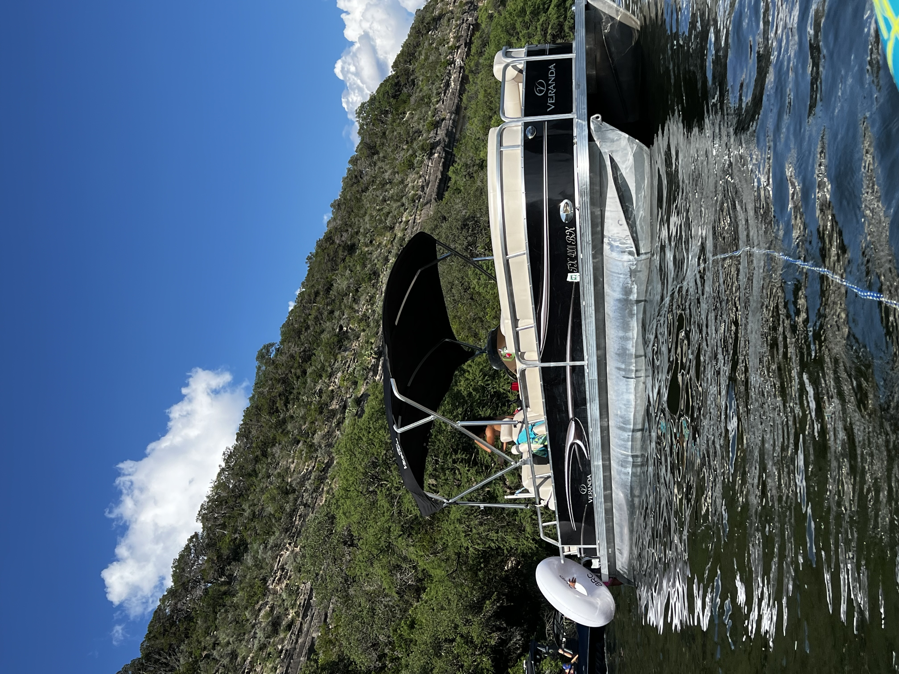
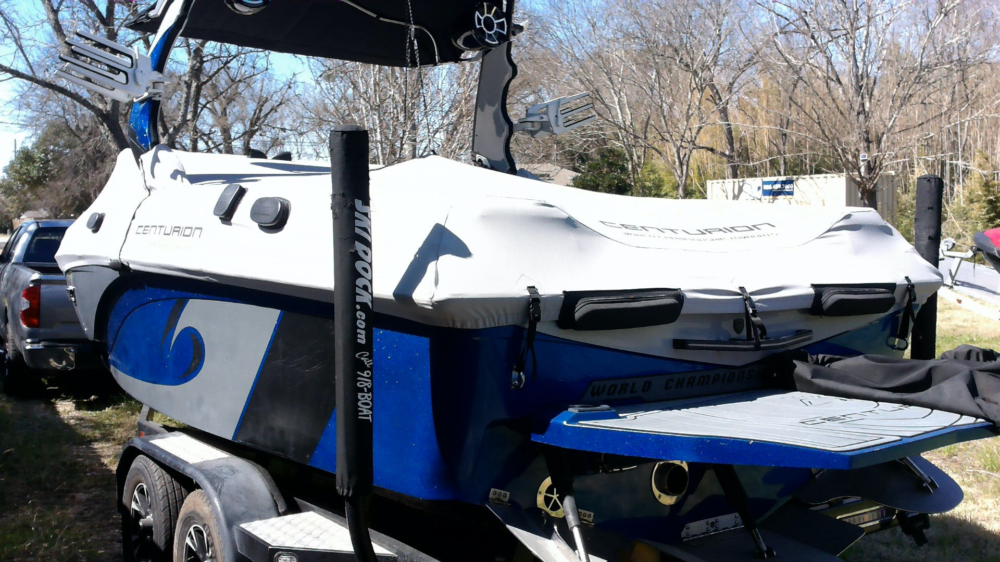

Our Pontoon
Our pontoon is clean, comfortable, and ready for a great lake day. Spacious enough for the whole group, easy to operate, and perfect for cruising the calm waters of Lake Marble Falls.

Comfortable Pontoon Boat
Sturdy, spacious, and shaded — our pontoon is the easiest boat style for a fun lake day. There is room to sit, move around, and enjoy the water with your whole crew.
• Up to 12 person capacity
• $150 / Hour — gas included
• Life vests provided
• 3-hour minimum recommended
Best for: casual cruising, families, groups, birthdays, bachelorette parties, and easy lake hangs.
Wake Boat — Centurion RI217
For those who want more action on the water, the Centurion RI217 is a World Championship wake boat built for wake surfing, wake boarding, and high-energy lake days.

Centurion RI217
This is the real deal — a competition-grade wake boat that throws a massive, surf-ready wave right out of the box. Whether you are a beginner trying wake surfing for the first time or an experienced rider, the RI217 delivers.
• Up to 10 passenger capacity
• $250 / Hour — gas included
• Wake surfing, wake boarding & tubing
• World Championship pedigree
Best for: wake surfing, wake boarding, tubing, thrill-seekers, and anyone who wants an action-packed lake day.